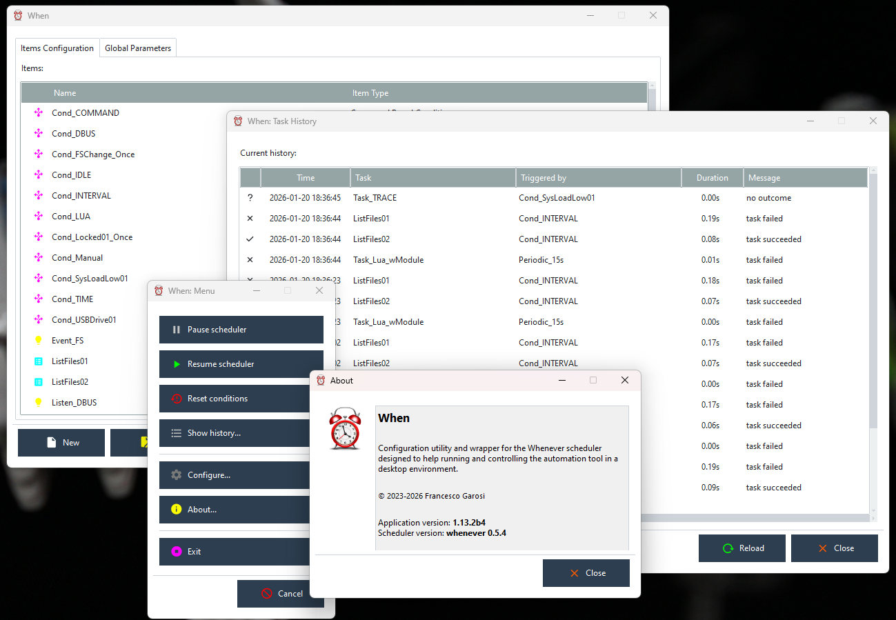

The When Documentation
What is When?
When is an automation tool for desktop environments: it is implemented as a GUI application that offers the possibility to define certain conditions which, when satisfied, cause certain tasks to be performed. Conditions can be of various kinds: time intervals or specific instants in time, session status, probing the current status of the system, messages or signals sent by the system or by other applications.

The When application is written in Python, with the goal of possibly providing a single UI for different hosting platforms. It actually does not implement the automation tool by itself but relies instead on an “external” tool, whenever, as its actual scheduler, by launching it as a child process. This separate process is designed, however, to be very lightweight and performance-oriented: thus the computational resources needed for it are probably less than the ones that implementing the scheduler within When would have needed.[1]
Actually, When consists of several different applications which are launched by issuing the specific commands on the command line:
configuration-only application:
configresident tray area application:
startvarious helpful utilities:
tool…
See the specific parts of the documentation for details on each application. The suggested installation procedure, however, can be used to set up application icons for the resident application and for the configuration utility, as well as to configure When to start in the background at login.
Note
Sometimes you will find suspension points in lists (like the one above) throughout this documentation: this does not mean that part of the documentation is missing or that there are some undocumented features. Suspension points like these indicate that the list might grow in the future.
About this Documentation
This is the main When documentation: it covers the new version of the application, that is, the wrapper for the whenever scheduler and automation tool. It aims at providing an easy to use frontend for the scheduler, both as a cross platform launcher in desktop environments, and as a configuration tool. When as a configuration tool also tries to provide a way to easily specify tasks and conditions that are not natively supported by whenever and that would be difficult to implement by hand, encoding them directly in whenever using its TOML configuration file. When tries to support all platforms supported by whenever itself, and to provide tasks, conditions, and events (both native and specialized) that are available on each single platform.
This document references:
whenever: the main scheduler and automation tool used by When;
whenever_tray: a minimal, lightweight, cross platform wrapper and frontend for whenever.
The first is the main core that When uses to accomplish its mission: unlike the previous version, When totally relies on whenever as its internal engine instead of implementing a scheduler on its own. The second can be considered as a complement to When, in the sense that When is designed to share its configuration location with whenever_tray in an interoperable way that would allow the latter to be launched as an alternative frontend for running whenever after having configured it with the help of When.
Covered Topics
The documentation handles the following topics:
Task Editors
Condition Editors
Event Editors
Simple Tutorial
Generated Configuration Files
For more information about the companion tools, whenever and whenever_tray, please refer to their respective above-mentioned repositories.
Glossary
For the sake of readability, a glossary follows for some of the terms used throughout this documentation.
Term |
Meaning |
|---|---|
APPDATA |
the application data directory is where When keeps configuration files, data files, and logs: see this page for details |
condition |
circumstance or set of circumstances that may or may not occur in a certain moment and whose occurrence determines the execution of tasks |
event |
signal, message, or external coincidence anyway that When (or whenever) can be instructed to listen to |
item |
used throughout the document to specify one of a task, a condition or an event |
system tray area |
area of the desktop where background-running applications show an icon and notifications: goes by several other names |
task |
an action that When will perform upon verification of a certain condition |
tick |
the instant in which the tests for condition verification are started and possibly consequential tasks are launched |
… |
… |